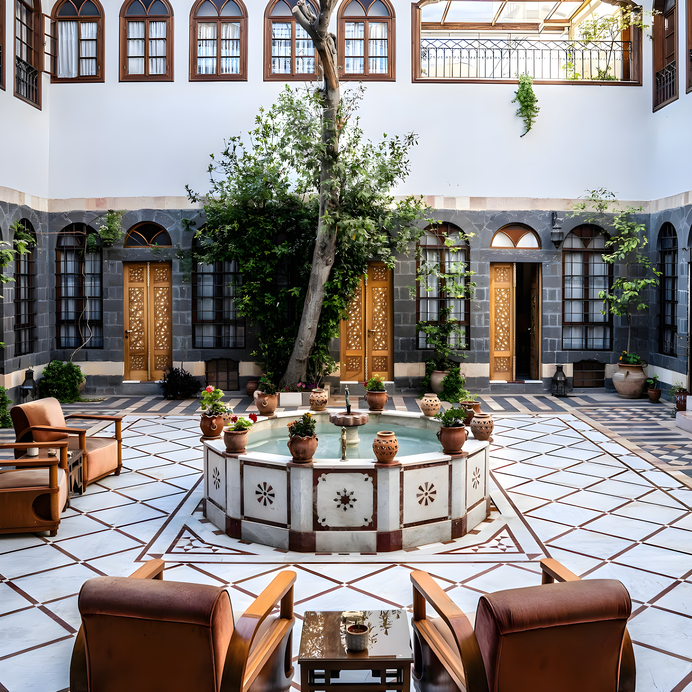
Welcome to Damascus
Damascus, the City of Jasmine, is the oldest continuously inhabited city in the world. It is known for its Roman gates and colonnades, its Ottoman-era courtyard houses, and streets and churches named in the Bible. We'll stay in and explore the Old City, a UNESCO World Heritage Site inside the Roman walls, with its souqs, the chapels and churches of the Christian quarter, the Umayyad Mosque, and the famous Khan As'ad Pasha, an 18th-century merchants' inn built in striped black-and-white stone.
The hotels in the Old City are restored Damascene houses, known for their marble courtyards with fountains, citrus trees, and jasmine. Every morning we'll have coffee and a traditional Syrian breakfast there. Potential hotels include Beit Al Wali, Beit Zafran, and Beit Zaman.
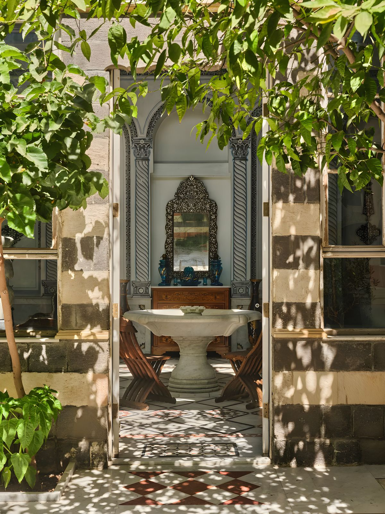
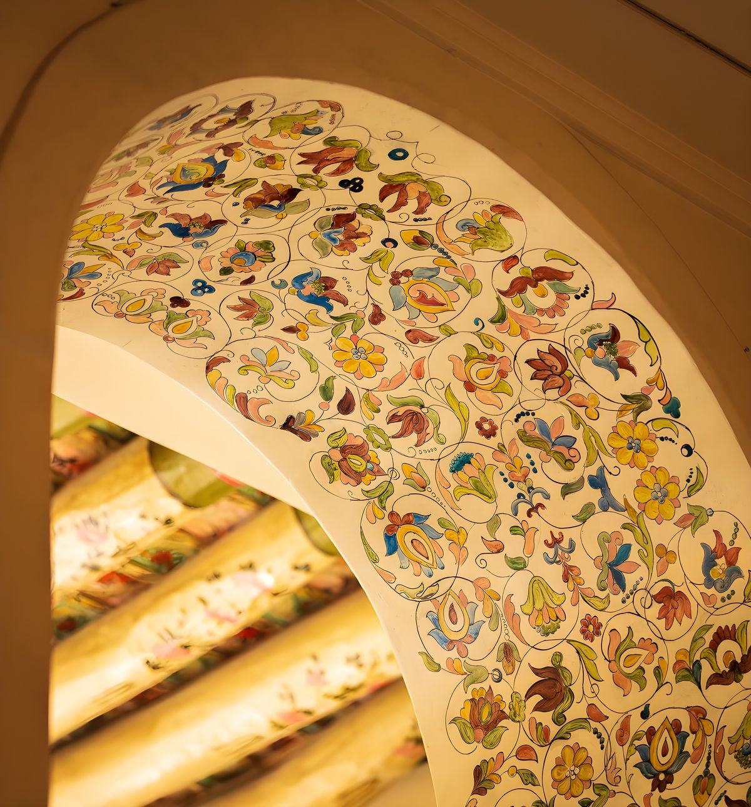
Studio visits with Syrian painters and sculptors, and galleries set inside old houses, such as Kozah on Straight Street and The Khan, a restored caravanserai that reopened this year as a crafts store and gallery.
A visit to the headquarters of one of Syria's leading technology startups and time with its founders on what it takes to build a company in Syria today, and where the opportunities are.
Conversations with the people shaping Syria's reconstruction, from government ministries to the investment authority, on how the country is reopening its economy.
Time with local nonprofits working on education and skills development, and the young Syrians they're preparing for the country's next chapter.
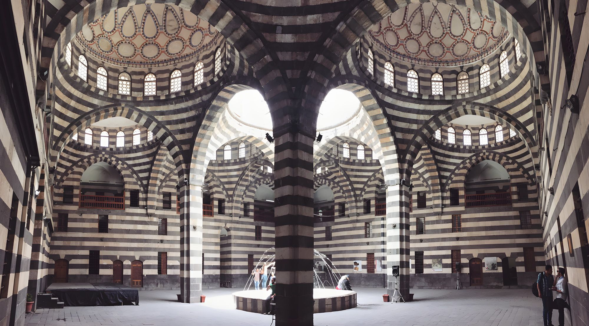
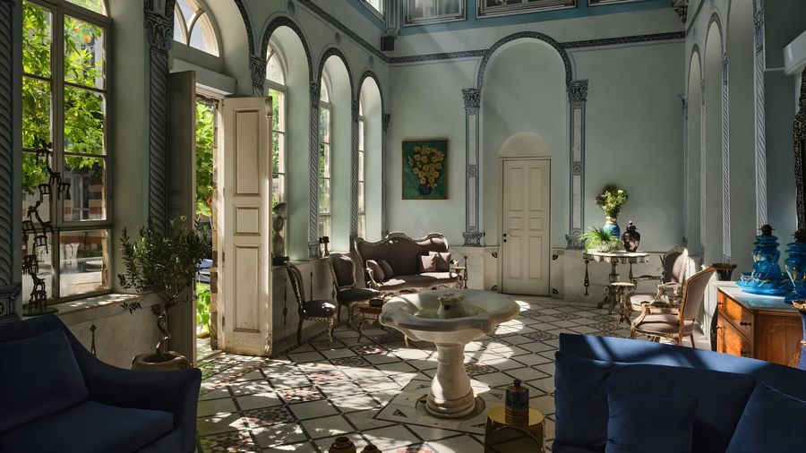
Architectural DigestInside a beautifully restored 19th-century Damascus homeForeign governments have lifted sanctions. Damascus airport is served by Qatar Airways, flydubai, Turkish Airlines, and others, and US citizens get a 30-day visa on arrival at the airport or at the Lebanese border. Syria received 3.5 million visitors in the first half of 2026. It's an exciting time to visit the country.
Yes, Damascus is safe to visit. The civil war is over. Major fighting stopped with a 2020 ceasefire, and the former regime fell in December 2024.
Syria is back on the international stage. President al-Sharaa has addressed the UN General Assembly two years running and became the first Syrian head of state to visit the White House, where Syria joined the US-led coalition against ISIS. Its embassy in Washington has reopened, and the UN Secretary-General visited Damascus this summer.
@AH_AlSharaa on XPresident al-Sharaa at the UN General Assembly, 2026The main risk is regional rather than Syrian. A flare-up between Israel, Iran, or Hezbollah could disrupt flights into Beirut.
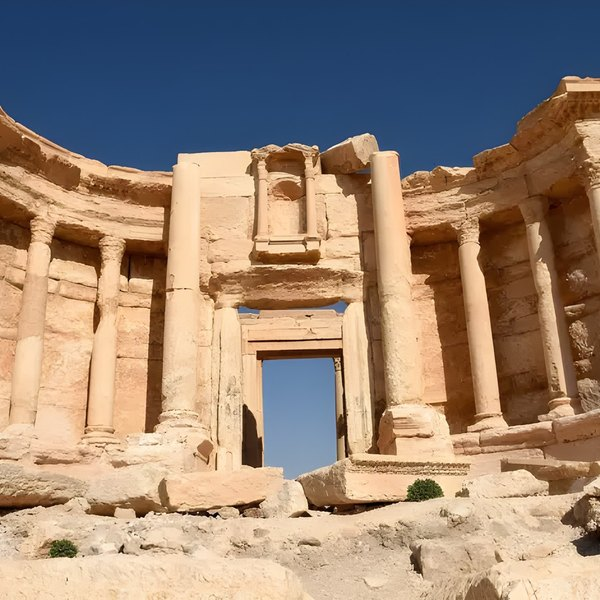
The NationalSyria visitor numbers more than double as international arrivals surgeI've been to Syria twice this year. Photos below!
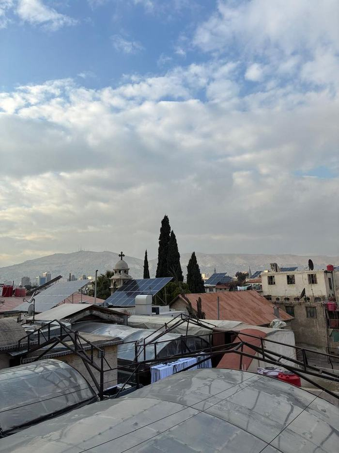
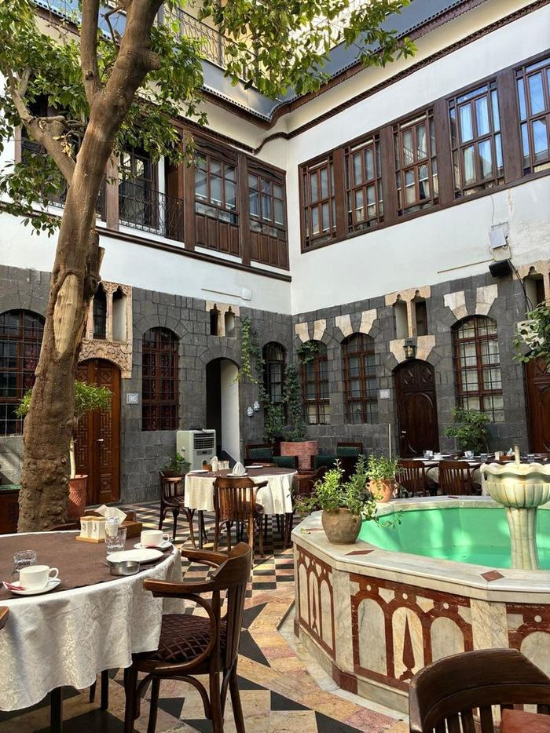
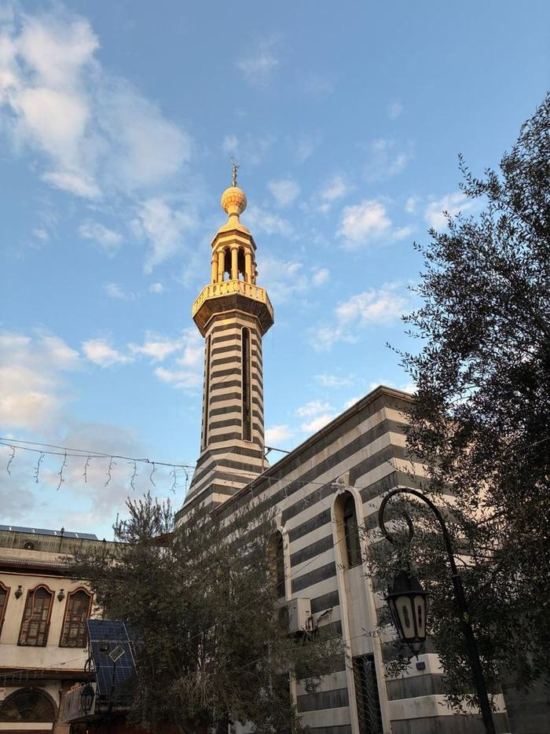
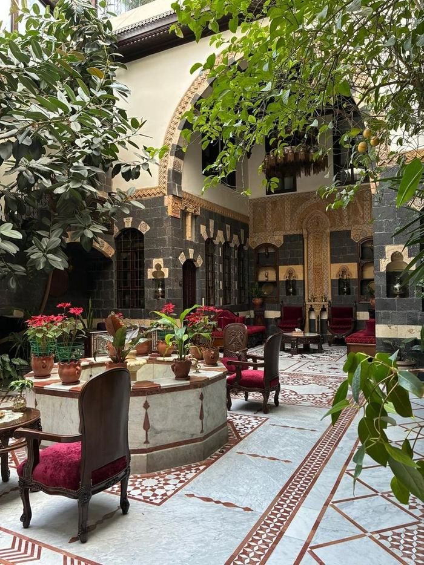
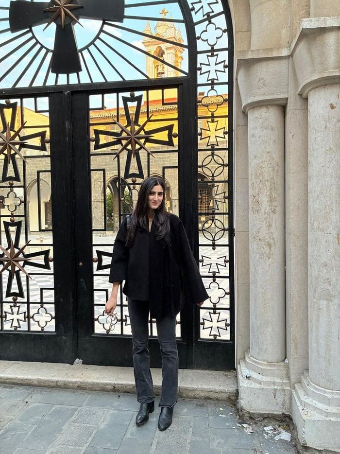
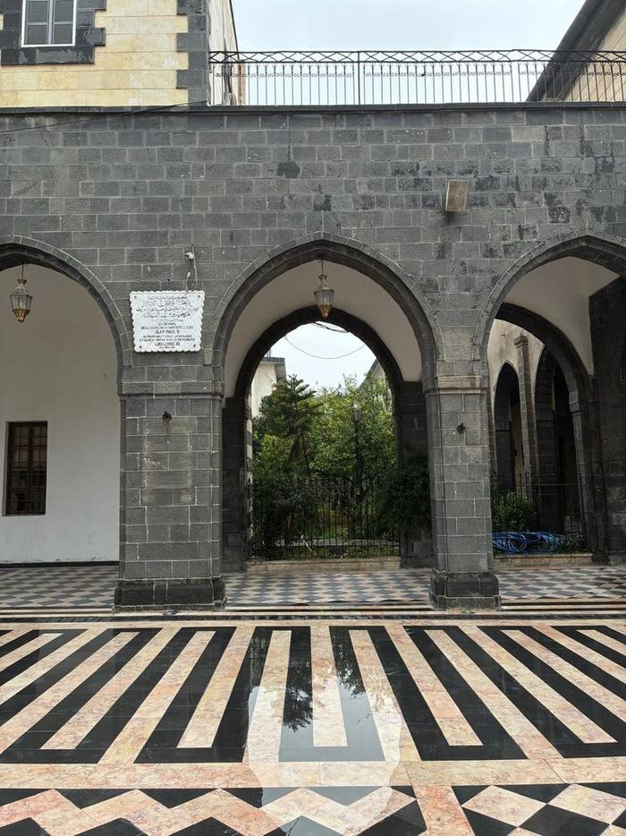
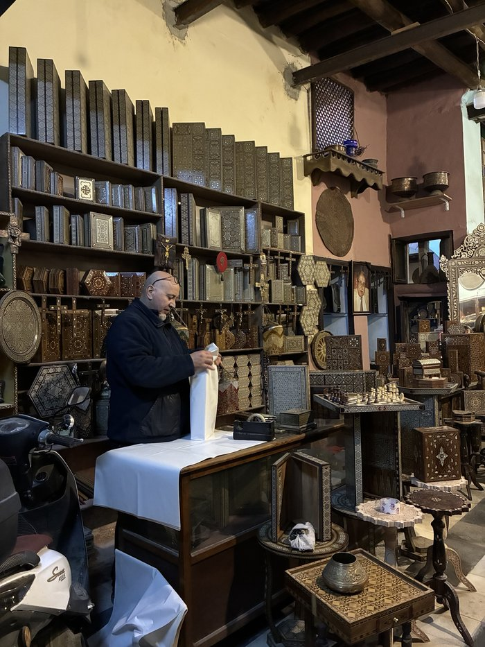
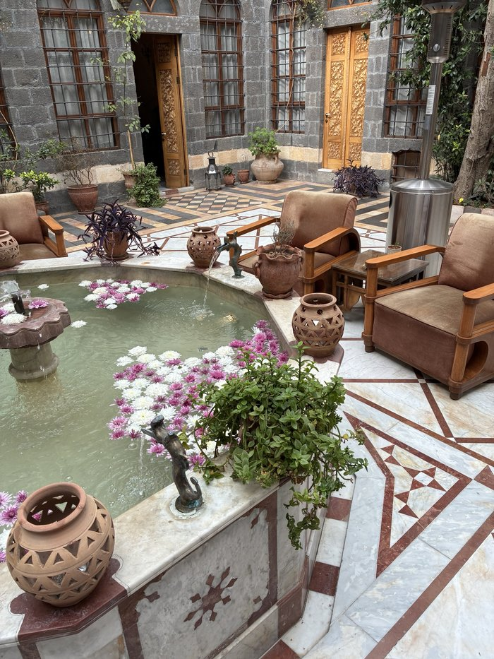
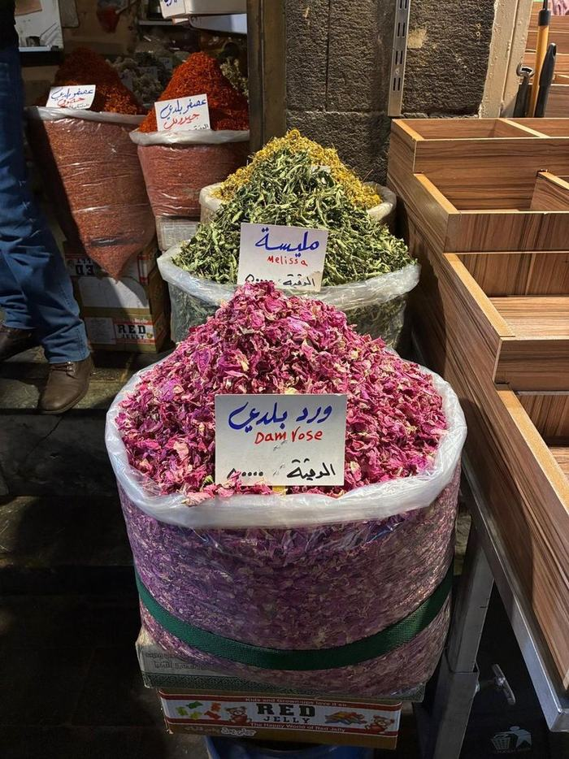
Twin share. Estimates until group rates are in.
Join the WhatsApp group to follow along and get the details as they're confirmed. Confirmations are due December 20.
Join the WhatsApp Group